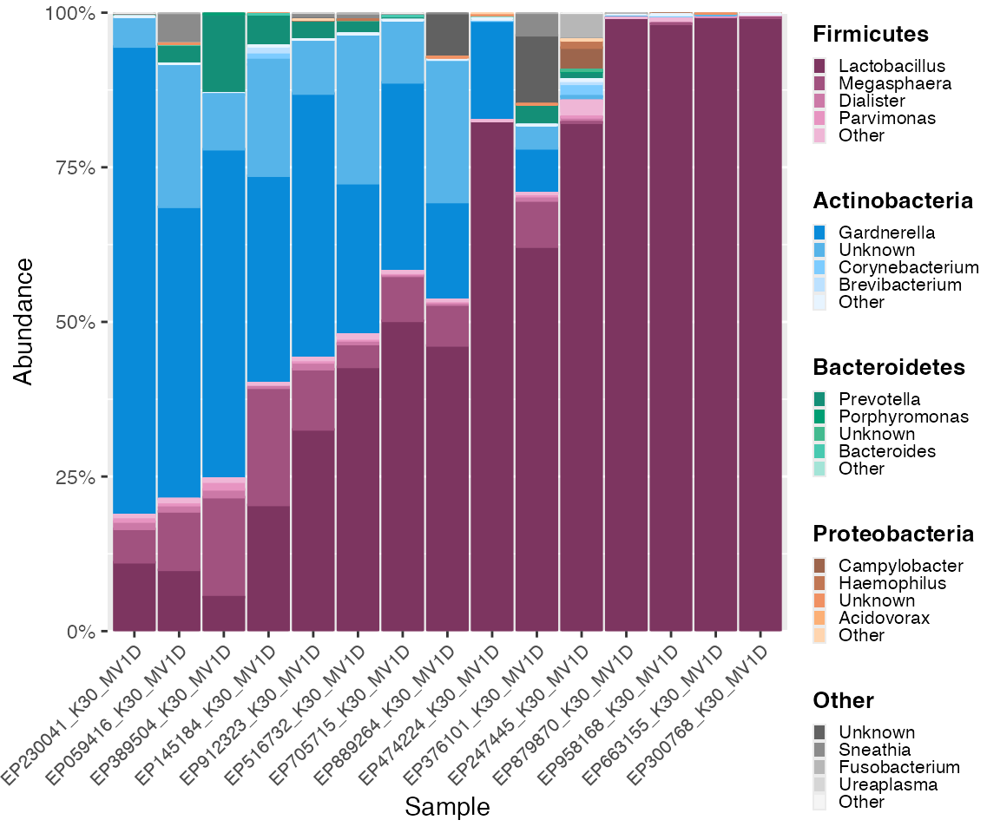
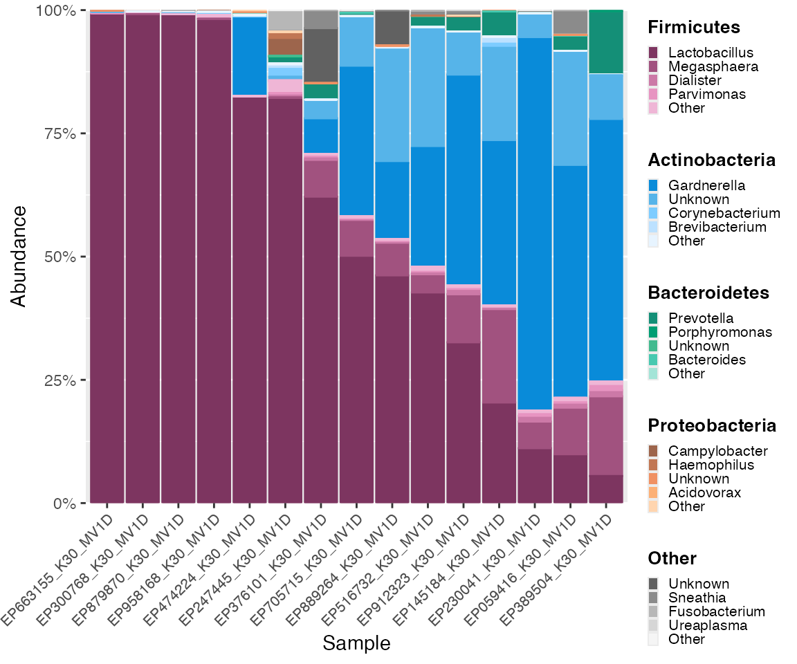
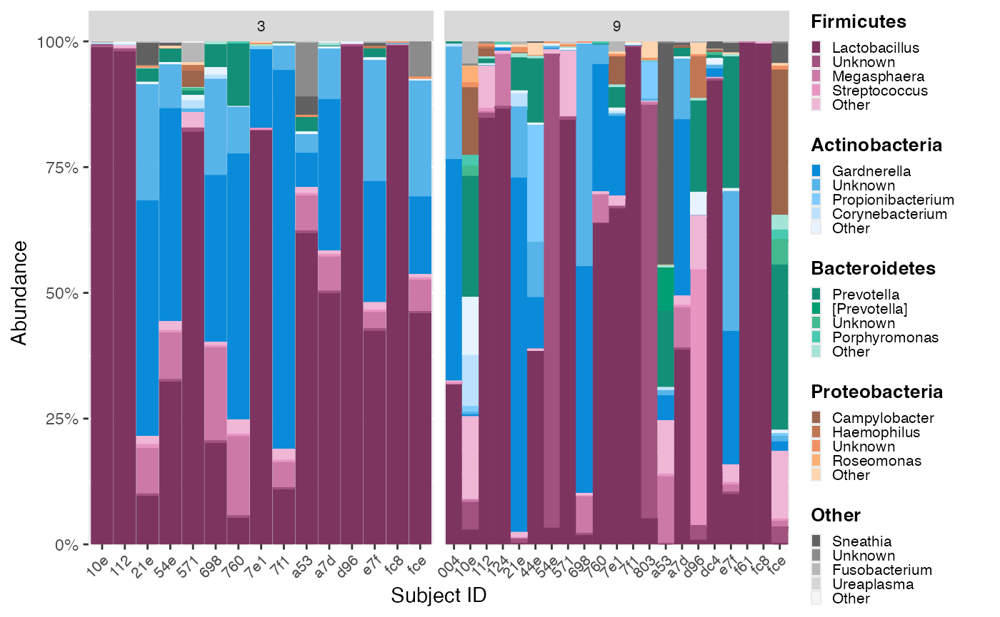
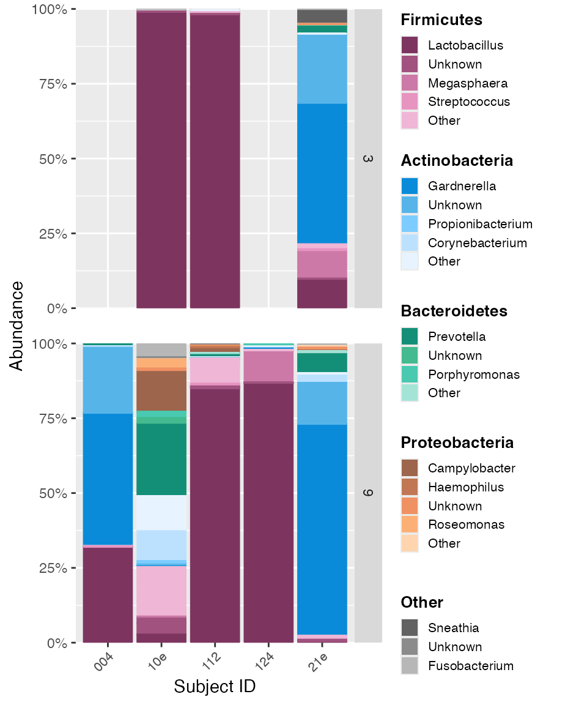
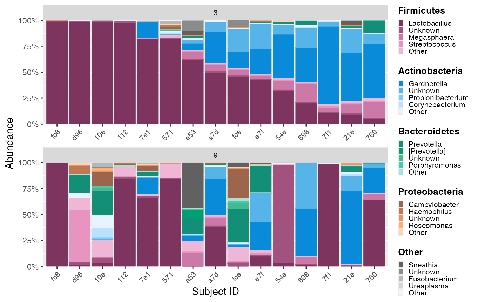

vignettes/microshades-sample_reordering.Rmd
microshades-sample_reordering.RmdThis tutorial uses the Human Microbiome Project 2 data available from
the HMP2Data
library to demonstrate the functionality of the
reorder_samples_by function in microshades.
Load the necessary packages for this tutorial.
HMP2 data is provided as phyloseq,
SummarizedExperiment, and MultiAssayExperiment
class objects, so the corresponding packages need to be installed and/or
loaded.
library(microshades)
library(phyloseq)
library(ggplot2)
library(dplyr)
library(cowplot)
library(forcats)
library(tidyverse)
library(HMP2Data) # BiocManager::install("HMP2Data")
library(SummarizedExperiment) # BiocManager::install("SummarizedExperiment")
library(MultiAssayExperiment) # BiocManager::install("MultiAssayExperiment")
ps_momspi16S <- momspi16S()
ps_momspi16S## phyloseq-class experiment-level object
## otu_table() OTU Table: [ 7665 taxa and 9107 samples ]
## sample_data() Sample Data: [ 9107 samples by 13 sample variables ]
## tax_table() Taxonomy Table: [ 7665 taxa by 7 taxonomic ranks ]The ps_momspi16S object contains 9,107 samples. Subset
this data to focus on a smaller sample size:
ps_momspi16S_sub <- subset_samples(ps_momspi16S,
sample_body_site == "vagina")
ps_momspi16S_sub <- subset_samples(ps_momspi16S_sub,
visit_number %in%c(3,9))Here we create a new column with shortened subject IDs, by taking the last three characters of each.
We will keep samples corresponding to a select list of shortened subject IDs.
These steps are for ease of use in later sections of this tutorial.
subj_ids <- sample_data(ps_momspi16S_sub)$subject_id
sample_data(ps_momspi16S_sub)$short_subject_id <- substr(subj_ids,
nchar(subj_ids) - 2,
nchar(subj_ids))
select_ids <- c("21e", "698", "124", "7f1",
"571", "004", "f61", "d96",
"803", "44e", "a53", "760",
"7e1", "e7f", "fc8", "a7d",
"dc4", "10e", "fce", "54e",
"112")
ps_momspi16S_sub <- subset_samples(ps_momspi16S_sub, short_subject_id %in% select_ids)Use the prep_mdf and create_color_dfs
microshades functions to evaluate abundance and apply advanced color
organization.
# Use microshades function prep_mdf to agglomerate, normalize, and melt the phyloseq object
mdf_momspi16S <- prep_mdf(ps_momspi16S_sub,
subgroup_level = "Genus")
# Create a color object for the specified data
color_objs_momspi16S <- create_color_dfs(mdf_momspi16S,
selected_groups = c('Proteobacteria', 'Actinobacteria',
'Bacteroidetes', 'Firmicutes'),
group_level = "Phylum",
subgroup_level = "Genus",
cvd = TRUE)
# Extract plotting objects
mdf_momspi16S <- color_objs_momspi16S$mdf
cdf_momspi16S <- color_objs_momspi16S$cdfNote: in the following examples, subgroup_level
is Genus and group_level is Phylum.
First, subset to a single visit to focus the view further.
ps_momspi16S_v3 <- subset_samples(ps_momspi16S_sub, visit_number == 3)
# Use microshades function prep_mdf to agglomerate, normalize, and melt the phyloseq object
mdf_momspi16S_v3 <- prep_mdf(ps_momspi16S_v3,
subgroup_level = "Genus")
# Create a color object for the specified data
color_objs_momspi16S_v3 <- create_color_dfs(mdf_momspi16S_v3,
selected_groups = c('Proteobacteria', 'Actinobacteria',
'Bacteroidetes', 'Firmicutes'),
group_level = "Phylum",
subgroup_level = "Genus",
cvd = TRUE)
# Extract plotting objects
mdf_momspi16S_v3 <- color_objs_momspi16S_v3$mdf
cdf_momspi16S_v3 <- color_objs_momspi16S_v3$cdfIt is important to note that any specification of the
order_tax parameter must match either
group_level or subgroup_level, set during
creation of the mdf and cdf objects (see above).
Here, we order based on a specific phylum (group level). The following plot is ordered by abundance of the phylum Actinobacteria.
color_objs_reorder_ab <- reorder_samples_by(mdf_momspi16S_v3,
cdf_momspi16S_v3,
order_tax = "Actinobacteria")
mdf_reorder_ab <- color_objs_reorder_ab$mdf
cdf_reorder_ab <- color_objs_reorder_ab$cdfThe reorder_samples_by function returns color objects,
which must be extracted to then use with the
plot_microshades function.
hmp_legend_1 <- custom_legend(mdf_reorder_ab, cdf_reorder_ab)
hmp_plot_1 <- plot_microshades(mdf_reorder_ab, cdf_reorder_ab) +
scale_y_continuous(labels = scales::percent, expand = expansion(0)) +
theme(legend.position = "none") +
theme(axis.text.x = element_text(size= 8)) +
theme (strip.text.x = element_text(size = 8))
plot_grid(hmp_plot_1, hmp_legend_1, rel_widths = c(1, .25))
Here, we order based on a specific genus (subgroup level). The following plot is ordered by abundance of the specified genus Lactobacillus.
color_objs_reorder_lb <- reorder_samples_by(mdf_momspi16S_v3,
cdf_momspi16S_v3,
order_tax = "Lactobacillus")
mdf_reorder_lb <- color_objs_reorder_lb$mdf
cdf_reorder_lb <- color_objs_reorder_lb$cdf
hmp_legend_2 <- custom_legend(mdf_reorder_lb, cdf_reorder_lb)
hmp_plot_2 <- plot_microshades(mdf_reorder_lb, cdf_reorder_lb) +
scale_y_continuous(labels = scales::percent, expand = expansion(0)) +
theme(legend.position = "none") +
theme(axis.text.x = element_text(size= 8)) +
theme (strip.text.x = element_text(size = 8))
plot_grid(hmp_plot_2, hmp_legend_2, rel_widths = c(1, .25))
In addition to reordering samples by abundance of a given taxon, you can supply an ordered list of samples to organize the resulting plot visually.
In this example, we would like to sort subject IDs alphabetically. We
can achieve this by supplying a list of subject IDs in the desired order
to the sample_ordering parameter.
color_objs_reorder_alpha_subject_ids <- reorder_samples_by(mdf_momspi16S,
cdf_momspi16S,
sample_variable = "short_subject_id",
sample_ordering = sort(select_ids))
mdf_reorder_alpha_ids <- color_objs_reorder_alpha_subject_ids$mdf
cdf_reorder_alpha_ids <- color_objs_reorder_alpha_subject_ids$cdf
hmp_legend_3 <- custom_legend(mdf_reorder_alpha_ids, cdf_reorder_alpha_ids)
hmp_plot_3 <- plot_microshades(mdf_reorder_alpha_ids, cdf_reorder_alpha_ids, x = "short_subject_id") +
scale_y_continuous(labels = scales::percent, expand = expansion(0)) +
theme(legend.position = "none") +
theme(axis.text.x = element_text(size= 8)) +
facet_wrap(~visit_number, scales = "free_x") +
theme (strip.text.x = element_text(size = 8)) +
labs(x = "Subject ID")
plot_grid(hmp_plot_3, hmp_legend_3, rel_widths = c(1, .25))
The list supplied to sample_ordering does not need to be
comprised of all samples.
By default, missing samples in the list will be dropped.
If we only specify the order of samples with shortened subject IDs
004, 10e, 112, 124, and 21e, samples with other subject IDs will be
dropped, and a warning will be displayed. (For using microshades in R
Markdown files to generate HTMLs, warnings are able to be suppressed by
setting warning=FALSE in chunk options.)
narrow_list <- c("004", "10e", "112", "124", "21e")
color_objs_reorder_narrow_subject_ids <- reorder_samples_by(mdf_momspi16S,
cdf_momspi16S,
sample_variable = "short_subject_id",
sample_ordering = narrow_list)## Warning in reorder_samples_by(mdf_momspi16S, cdf_momspi16S, sample_variable =
## "short_subject_id", : Some samples were dropped. Check sample_ordering list.
mdf_reorder_narrow_ids <- color_objs_reorder_narrow_subject_ids$mdf
cdf_reorder_narrow_ids <- color_objs_reorder_narrow_subject_ids$cdf
hmp_legend_4 <- custom_legend(mdf_reorder_narrow_ids, cdf_reorder_narrow_ids, legend_key_size = 0.8)
hmp_plot_4 <- plot_microshades(mdf_reorder_narrow_ids, cdf_reorder_narrow_ids, x = "short_subject_id") +
scale_y_continuous(labels = scales::percent, expand = expansion(0)) +
theme(legend.position = "none") +
theme(axis.text.x = element_text(size= 8)) +
facet_grid(vars(visit_number), scales = "free_x") +
theme (strip.text.x = element_text(size = 8), panel.spacing.y = unit(1.5, "lines")) +
labs(x = "Subject ID")
plot_grid(hmp_plot_4, hmp_legend_4, rel_widths = c(1, .5))
The reorder_samples_by function can also be used to
apply existing abundance-based order to new data. Use
reorder_samples_by to get the order of a sample variable,
then provide this order as a list to reorder another dataset.
In this example, we would like to order by Lactobacillus abundance in Visit 3 samples, then apply this order to Visit 9 samples.
First, reorder samples from Visit 3 by Lactobacillus abundance, making sure to specify subject ID as the sample variable to sort. The resulting mdf object will be used to extract the order.
color_objs_reorder_lb_subject_ids <- reorder_samples_by(mdf_momspi16S_v3,
cdf_momspi16S_v3,
sample_variable = "short_subject_id",
order_tax = "Lactobacillus")
mdf_reorder_lb_ids <- color_objs_reorder_lb_subject_ids$mdfGet the unique factor levels that have been set in the mdf object.
Then, convert to a vector to supply to the
reorder_samples_by function.
Reorder by subject ID, following the supplied order of subject IDs.
color_objs_subject_reorder_lb <- reorder_samples_by(mdf_momspi16S,
cdf_momspi16S,
sample_variable = "short_subject_id",
sample_ordering = lb_desc_ids)## Warning in reorder_samples_by(mdf_momspi16S, cdf_momspi16S, sample_variable =
## "short_subject_id", : Some samples were dropped. Check sample_ordering list.
mdf_subject_reorder_lb <- color_objs_subject_reorder_lb$mdf
cdf_subject_reorder_lb <- color_objs_subject_reorder_lb$cdfCompare the panels to see how the ordering of Lactobacillus abundance in Visit 3 samples has been applied to Visit 9 samples.
hmp_legend_6 <- custom_legend(mdf_subject_reorder_lb, cdf_subject_reorder_lb)
hmp_plot_6 <- plot_microshades(mdf_subject_reorder_lb, cdf_subject_reorder_lb, x = "short_subject_id") +
scale_y_continuous(labels = scales::percent, expand = expansion(0)) +
theme(legend.position = "none") +
theme(axis.text.x = element_text(size= 8)) +
facet_wrap(~visit_number, scales = "free_x", nrow=2) +
theme (strip.text.x = element_text(size = 8)) +
labs(x = "Subject ID")
plot_grid(hmp_plot_6, hmp_legend_6, rel_widths = c(1, .25))